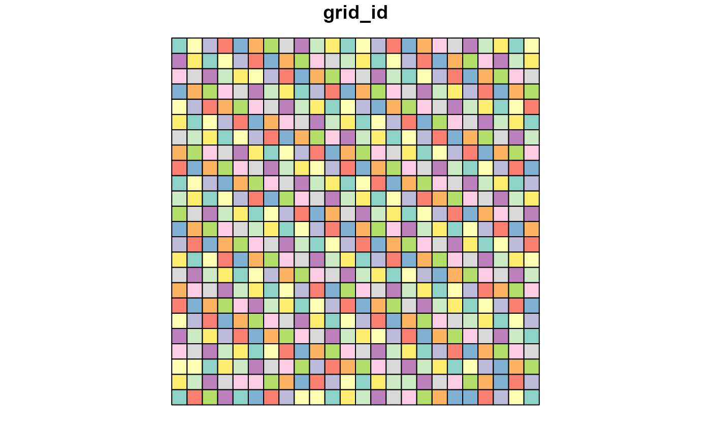

Builds a regular lattice over a point-occurrence data set, assigns every record
a grid_id, and returns grid-level summaries in both abundance and
presence/absence formats.
Usage
generate_grid(
data,
x_col = "x",
y_col = "y",
grid_size = 0.5,
sum_cols = NULL,
extra_cols = NULL,
crs_epsg = 4326,
unit = c("deg", "min", "sec", "m")
)Arguments
- data
Data frame of points with x-y coordinates.
- x_col
Name of the longitude column. Default
"x".- y_col
Name of the latitude column. Default
"y".- grid_size
Cell size (degrees or metres, depending on CRS).
- sum_cols
Character or numeric vector of columns to aggregate. Note: Numeric indices are converted to names internally.
- extra_cols
Additional columns to keep (optional).
- crs_epsg
EPSG code of the coordinate reference system.
- unit
One of "deg", "min", "sec", or "m".
Value
A list containing
grid_r- multi-layer SpatRastergrid_sf- polygon lattice with centroids & metricsgrid_spp- abundance summary (data.frame)grid_spp_pa- presence/absence summary (data.frame)
Details
The function:
Tiles the study extent with square cells of size
grid_size.Computes cell centroids and, for geographic CRS data, optional mapsheet codes (1:250 000 "BB" series).
Aggregates user-specified columns (
sum_cols) per cell, producinggrid_spp- counts / abundancesgrid_spp_pa- binary 0 / 1 table for dissimilarity analyses.
Calculates helper metrics (
obs_sum,spp_rich) for each cell.Rasterises key layers (
grid_id,obs_sum,spp_rich) and preserves any extra metadata supplied viaextra_cols.
Examples
set.seed(123)
data = data.frame(
x = runif(100, -10, 10),
y = runif(100, -10, 10),
species1 = rpois(100, 5),
species2 = rpois(100, 3),
recordedBy = sample(LETTERS, 100, replace = TRUE)
)
grid_result = generate_grid(data, x_col = "x", y_col = "y",
grid_size = 1, sum_cols = 3:4,
extra_cols = c("recordedBy"))
#> Generating 1-deg grid ...
print(grid_result$block_sp)
#> NULL
plot(grid_result$grid_sf["grid_id"])
